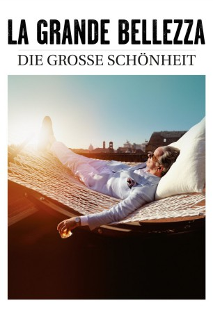
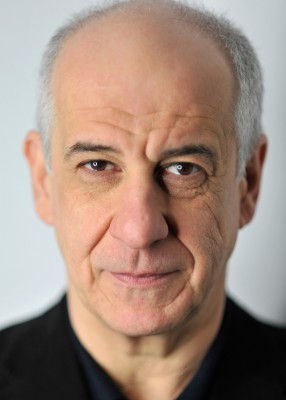
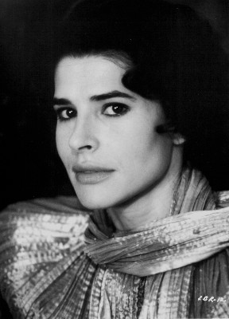

#3066 La Grande Bellezza - Die große Schönheit
Auszeichnungen: 1 Oscars gewonnen 1 GoldenGlobes gewonnen 1 BAFTA-Awards gewonnen
 
 IMDB-Wertung: 7.8 / 10
IMDB-Wertung: 7.8 / 10  Metascore: 86
Metascore: 86 
Es ist Sommer. Rom erstrahlt in voller Pracht: schön und verführerisch. Wie Jep Gambardellas Leben - rauschende Feste, Gourmet-Restaurants und schöne Frauen. Doch hinter dem Verführer verbirgt sich ein desillusionierter Mensch, den die Oberflächlichkeit der opulenten Gesellschaft langweilt. Oft denkt er an seine literarische Arbeit, die ihm in seiner Jugend den großen Erfolg für seinen bisher einzigen Roman eingebracht hat. Außerdem schwelgt er in Erinnerungen an seine erste große Liebe. Die Leere, die ihm bleibt, überspielt er mit Zynismus und Gin Tonic. Mit seinem 65. Geburtstag wird ihm eines klar: Alles ist vergänglich. Auch in der ewigen Stadt.
Jahr: 2013
Dauer: 141 Minuten
FSK: 12
Land: Italien Studio: DCM Film DistributionTonspuren:
Untertitel:
Auflösung: 1080p (1920x816) Größe: 9687 MB
Genre: Drama
Regisseur: Paolo Sorrentino
Drehbuch: Paolo Sorrentino, Paolo Sorrentino, Umberto Contarello
Soundtrack: Lele Marchitelli
Darsteller:
-  Toni Servillo als Jep Gambardella
- Carlo Verdone als Romano
- Sabrina Ferilli als Ramona
- Carlo Buccirosso als Lello Cava
- Giorgio Pasotti als Stefano
- Massimo Popolizio als Alfio Bracco
- Serena Grandi als Lorena
 Vernon Dobtcheff als Arturo
Vernon Dobtcheff als Arturo- Luciano Virgilio als Alfredo
- Anita Kravos als Talia Concept
- Isabella Ferrari als Orietta
- Francesca Amodio als Carmelina
- Giulia Di Quilio als Donna coppia esibizionista
- Giorgia Ferrero als Ammiratrice Jep
-  Fanny Ardant als Herself , uncredited
- Flaminia Bonciani als Escort , uncredited
- Gianpiero Cognoli als Agente DIA , uncredited
- Iaia Forte als Trumeau
- Pamela Villoresi als Viola
- Galatea Ranzi als Stefania
- Franco Graziosi als Conte Colonna
- Sonia Gessner als Contessa Colonna
- Anna Della Rosa als Ragazza esangue
- Luca Marinelli als Andrea
 Ivan Franek als Ron Sweet
Ivan Franek als Ron Sweet- Dario Cantarelli als Assistente santa
- Pasquale Petrolo als Lillo De Gregorio
- Aldo Ralli als Cardinale
- Giusi Merli als Santa
- Giovanna Vignola als Dadina
- Ludovico Caldarera als Padre Basilicata
- Maria Laura Rondanini als Madre Basilicata
- Francesca Golia als Suora botox
- Silvia Munguia als Ahè
- Massimo De Francovich als Egidio
- Roberto Herlitzka als Cardinal Bellucci
- Alberto Aguirre als Mariachi festa
- Maria Rosaria Alati als Donna anziana botox
- Stefania Barca als Donna botox
- Gabriella Belisario als Ragazza botox
- Alessia Bellotto als Ammiratrice Jep
- Concetta Buzzanca als Signora matrimonio
- Gino Camini als Mariachi festa
- Annaluisa Capasa als Elisa De Santis
- Roberta Cartocci als Guida turistica
- Severino Cesari als Sebastiano Paf
- Margherita Cornali als Donna 'adoro'
- Jamaica Corridori als Ballerina burlesque
- Natalia De Maria als Cubista festa Jep
- Carmelo Di Marco als Uomo jogging
Datei: X:\2013(I-M)\La Grande Bellezza - Die große Schönheit (2013, FSK12, 1920x816).mkv seit 20.01.2016
Festplatte: HD 2013(I-Z)-2014(A-Z)
 Es gibt insgesamt 89 Filme in der Gruppe '2013(I-M)'
Es gibt insgesamt 89 Filme in der Gruppe '2013(I-M)'